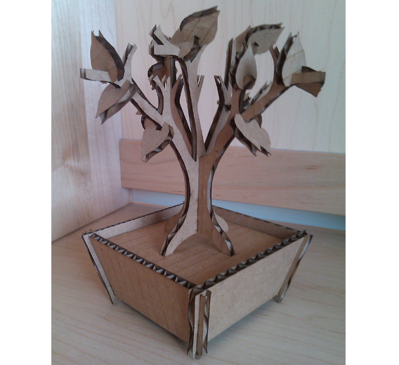
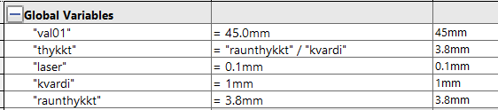
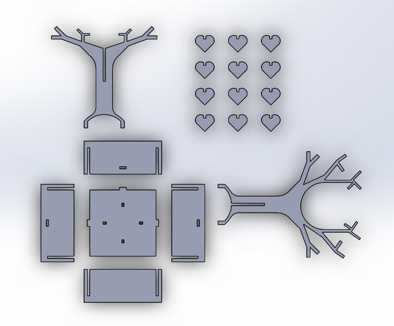
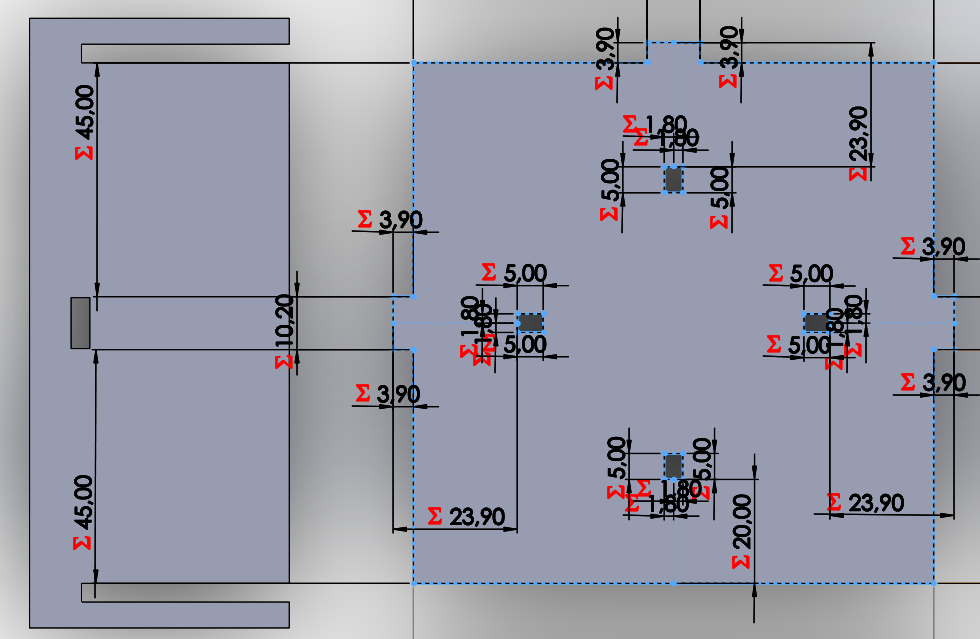
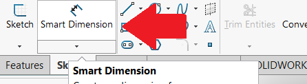
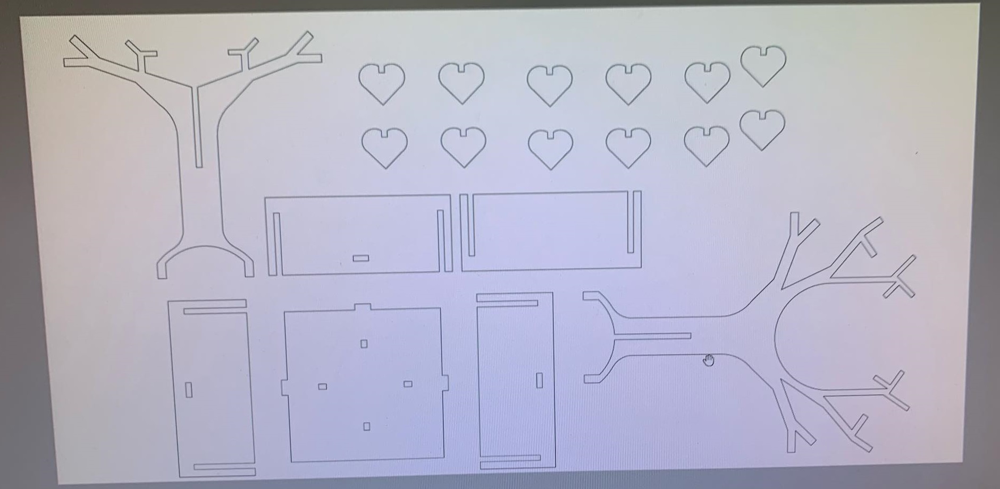
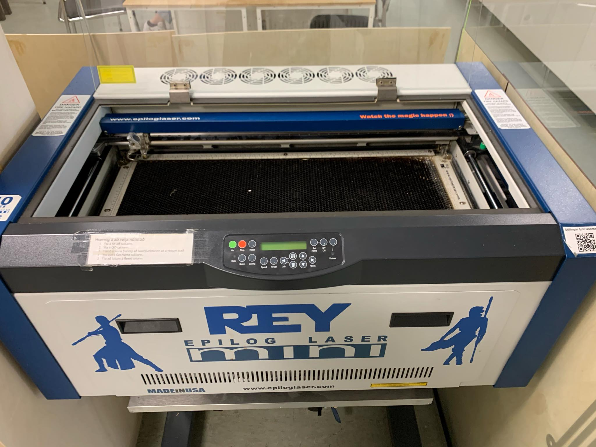
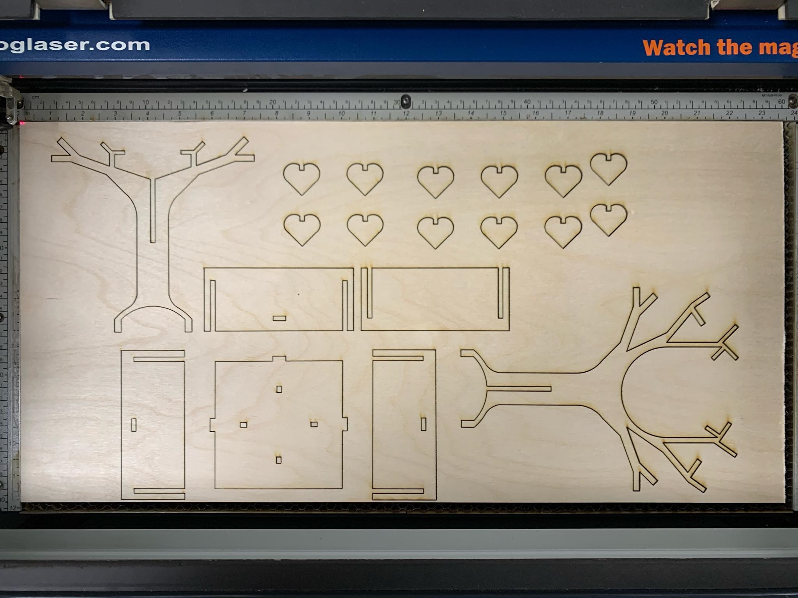
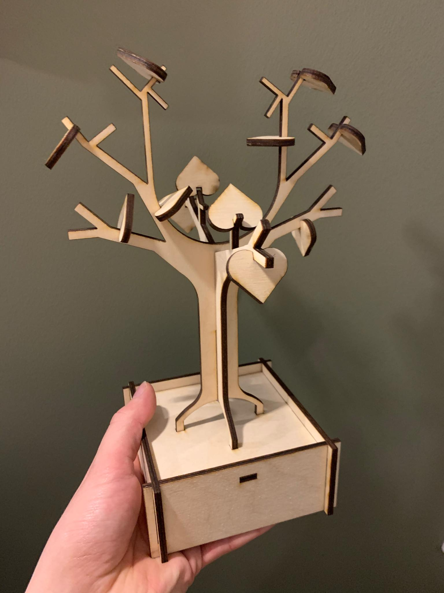

Press fit parametric design
Below you will find a detailed description of the project process.
In this project I made a press fit item with a parametric design.
An interference fit, also known as a press fit or friction fit is a form of fastening between two tight fitting mating parts that produces a joint which is held together by friction after the parts are pushed together.
Parametric design is a process based on algorithmic thinking that enables the expression of parameters and rules that, together, define, encode and clarify the relationship between design intent and design response.
The project desctiption was to:
1. Use a CAD software to build a parametric design of a pressfit construction kit.
2. Cut your design with a laser cutter.
3. Document the process and upload your design files.
I browsed google for inspiration and finally settled on making a tree like the one below.
I started my CAD-design using Solidworks.
Download SolidworksIn the equations drop-down menu I created "Global variables" that could later be changed. The important variables are the laser thikness, the model scale and the thikness of the material beging cut.
Here you can see the design.
All lines had to be constrained with the parameters or "global variables" that I had made before. This way If one property of the design is changed all you have to do is change the parameter and the design will change with it.
Use the "smart dementions" to make sure that the parametric equations are locked in.
When I was satisfied with my design I exported my design as a drawing (.ai file) and opened it up in Adobe Illustrator. Here I could move the different parts of the design around to make it fit inside the bord that the laser cutter would use as well as defining the line stroke (0,2). When I had rearanged the design I exported the file as a PDF so the laser cutter could read it.
The laser cutter I used is called Epilog Laser mini.
The laser cutter was then about 10 minutes cutting out my design. The laser didn't work for the first 5 seconds so after the cutter had finished I had to reset it and make it cut out the first part again.
The only thing left then was to assemble my laser cut, press fit, parametric cut out. Here is the resault of that.
